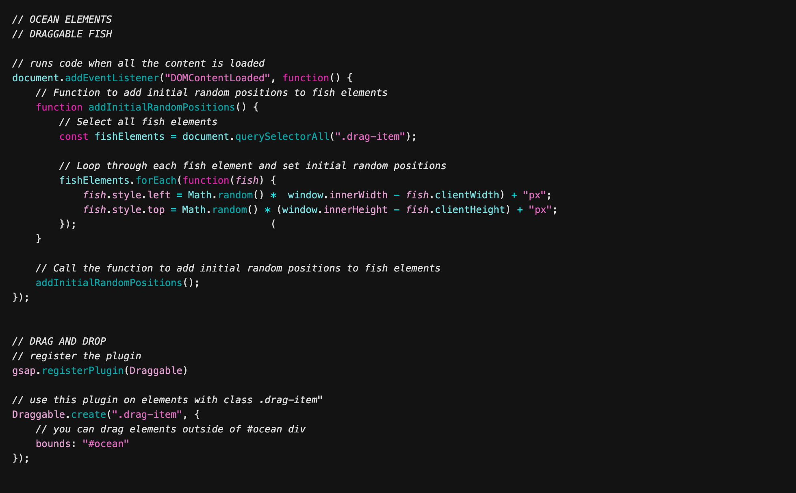
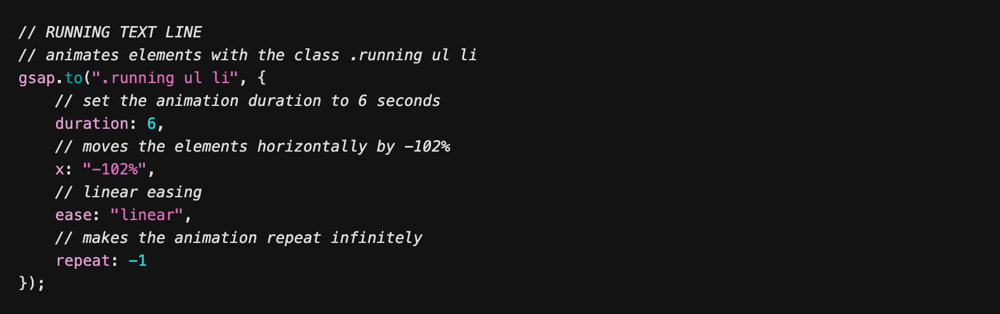
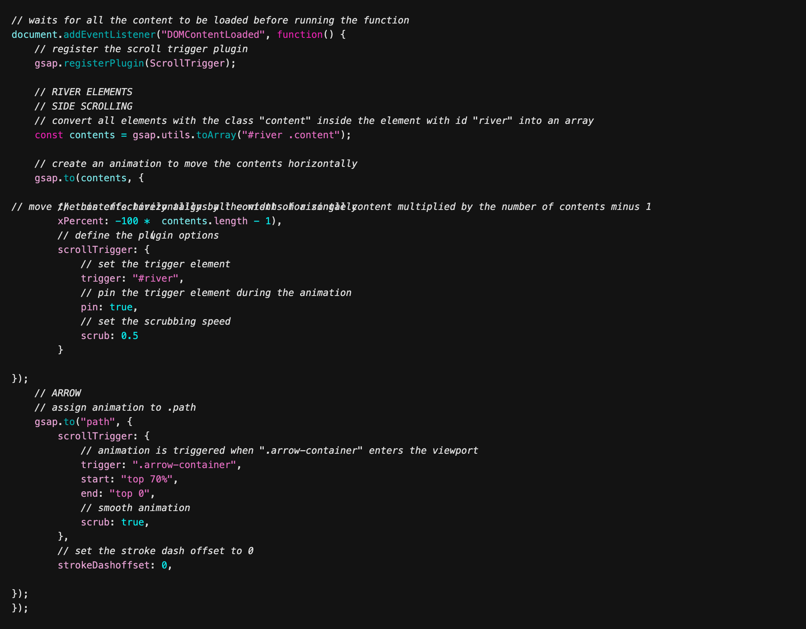
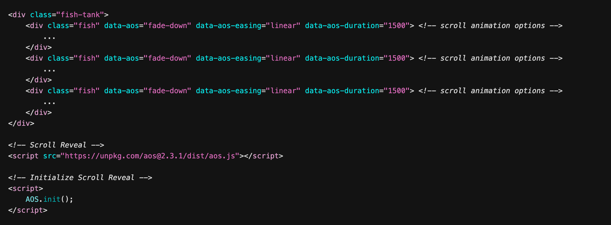

the blue - water website
an interactive visual experience designed to raise awareness around water pollution, created as an experiment to explore how far I can take your experience on my websites.
Input
Masha Supikhanova – Creative developer
Contributors
Airrick Dunfield – Mentor, front-end developer
Jayden Inniss – Photographer
Timeframe
Start Date – March 27th, 2024
End Date – May 17th, 2024
Total Hours
36
Design Tools
Photoshop,
Figma
Developer Stack
HTML, CSS,
JavaScript, jquery
My very personal thoughts and concerns, interpreted for a good cause, though art online.
I want to inspire hope and motivate action to combat the issue, by showcasing the beauty of water through interactive elements.
This site was made as a term project for BCIT’s Web Scripting 1 course, as a part of the New Media Design & Web Development program to showcase usage of Vanilla JavaScript, JS Plugins and Libraries and my skills with CDN and NPM implementation.
using gsap.
This website has interesting interactions and animation, that were made using GSAP.
I found out that GSAP is great at handling wide variety or animation with minimum code. By adding CDN link and a couple of additional HTML classes you get all control you need for quick and easy animating.
-

-

-

npm install.
Other than GSAP I explored other possibilities with Node Package Manager, used through VS Code Terminal.
To begin, I initialized my project with npm, creating a package.json file to manage project dependencies and scripts. I installed these packages using the following command: npm install “library”.
scroll reveal.
One noteworthy find was the AOS (Animate On Scroll) library, which provides a minimalist approach to animating sections upon scroll. This library stood out due to its ease of use and minimal code requirements, making it an excellent choice for enhancing the user experience in my project.
-

During development I turned my “I don’t know how to make it” into “Let me see if can make it” in a span of two weeks. I explored a lot of YouTube tutorials, Code Pen demos, even opened a paper book and read through a lot of documentation. It really got me thinking how sharing and caring dev community is, because the amount of free knowledge I received is borderline illegal.

One of the biggest challenges I took on was implementing 3D scene, using Three.js Library.
But with help of caring dev community online I was able to add this simple, but such effective water model.
Accompanied by SoundCloud API widget, with custom water songs playlist.
It turned out to be concrete evidence of my ability to think and learn on my feet
I dedicate a lot of time to understanding the project's purpose and secondary goals. I prefer working on something intriguing that I truly care about. I didn't want to create anything commercial; instead, I wanted to show my unique style.
TheBlue showed me how far I’ve come in my web development journey and how much more is out there to know, experience and learn. It also taught me about the importance of tidy and neat code structure, which is vital when you mix and extend functionality of your site in such ways, implementing different libraries, making it unique and memorable.

more work.
ezt - online tea shop

meowdy! Cat surprise boxes